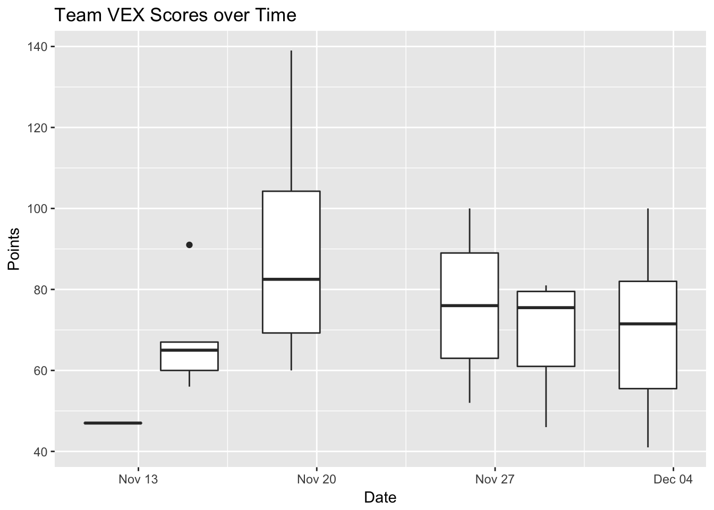

My son is in a robotics competition this year. He has to score points by driving a robot around a course and making it pick up and place things. I thought it might be nice to chart his progress.
The real learning issue for today is using the googlesheets package to work with the data. I often enter data using this site and it would save me a lot of time to get the data directly from Google Sheets rather than downloading it as a csv. The data loading section of this is based on this vignette.
suppressPackageStartupMessages(library("dplyr"))
library(ggplot2)
library(googlesheets)
suppressPackageStartupMessages(library(lubridate))First I had to establish a connection with the Google account I use. The following commands brought up a browser window and I authenticated there. Once authenticated I was able to see a list of my Google Sheets, as if I had gone to the website.
my_sheets <- gs_ls() # Establish connection with my Google account
my_sheets %>% glimpse() # View the resulting data## Observations: 296
## Variables: 10
## $ sheet_title <chr> "VEX_practice_scores", "Next Step Shelter Dinner -...
## $ author <chr> "mikenanowen", "annkinn", "cnndmd", "keriann", "mi...
## $ perm <chr> "rw", "rw", "rw", "rw", "rw", "rw", "r", "rw", "rw...
## $ version <chr> "new", "new", "new", "new", "new", "new", "new", "...
## $ updated <dttm> 2017-12-04 23:51:58, 2017-12-04 07:53:55, 2017-12...
## $ sheet_key <chr> "1oXJj7psIDF8SJMqBIxHQ9dEskLUslXuVSqq0B65guLw", "1...
## $ ws_feed <chr> "https://spreadsheets.google.com/feeds/worksheets/...
## $ alternate <chr> "https://docs.google.com/spreadsheets/d/1oXJj7psID...
## $ self <chr> "https://spreadsheets.google.com/feeds/spreadsheet...
## $ alt_key <chr> NA, NA, NA, NA, NA, NA, NA, NA, NA, NA, NA, NA, NA...To select a sheet I had to get some attributes about it. I used the title to find it, but I could have used its key or even the URL.
vex <- gs_title("VEX_practice_scores") # Create GS object ## Sheet successfully identified: "VEX_practice_scores"vex## Spreadsheet title: VEX_practice_scores
## Spreadsheet author: mikenanowen
## Date of googlesheets registration: 2017-12-05 00:06:00 GMT
## Date of last spreadsheet update: 2017-12-04 23:51:58 GMT
## visibility: private
## permissions: rw
## version: new
##
## Contains 1 worksheets:
## (Title): (Nominal worksheet extent as rows x columns)
## Sheet1: 1000 x 26
##
## Key: 1oXJj7psIDF8SJMqBIxHQ9dEskLUslXuVSqq0B65guLw
## Browser URL: https://docs.google.com/spreadsheets/d/1oXJj7psIDF8SJMqBIxHQ9dEskLUslXuVSqq0B65guLw/Once I had the right sheet, I was able to read it in directly into R. Magic!
vex_scores <- gs_read(vex)## Accessing worksheet titled 'Sheet1'.## Warning: Duplicated column names deduplicated: 'OJ' => 'OJ_1' [6], 'EL' =>
## 'EL_1' [7]## Parsed with column specification:
## cols(
## Run = col_integer(),
## Date = col_date(format = ""),
## Points = col_integer(),
## OJ = col_character(),
## EL = col_character(),
## OJ_1 = col_character(),
## EL_1 = col_character()
## )vex_scores## # A tibble: 39 x 7
## Run Date Points OJ EL OJ_1 EL_1
## <int> <date> <int> <chr> <chr> <chr> <chr>
## 1 1 2017-11-12 47 <NA> <NA> <NA> <NA>
## 2 2 2017-11-15 56 <NA> <NA> <NA> <NA>
## 3 3 2017-11-15 60 <NA> <NA> <NA> <NA>
## 4 4 2017-11-15 65 <NA> <NA> <NA> <NA>
## 5 5 2017-11-15 67 <NA> <NA> <NA> <NA>
## 6 6 2017-11-15 91 <NA> <NA> <NA> <NA>
## 7 7 2017-11-19 60 <NA> <NA> <NA> <NA>
## 8 8 2017-11-19 93 <NA> <NA> <NA> <NA>
## 9 9 2017-11-19 88 <NA> <NA> <NA> <NA>
## 10 10 2017-11-19 77 <NA> <NA> <NA> <NA>
## # ... with 29 more rowsFrom there it was a straightforward process to visualize the team’s performance. I created a plot of their performance over time. Sadly they don’t seem to be getting any better. A solid score would be 105-125. They average in the 70s.
vex_scores$Points## [1] 47 56 60 65 67 91 60 93 88 77 67 116 139 108 60 76 88
## [18] 90 89 76 63 71 52 54 100 78 81 80 46 57 73 72 91 45
## [35] 59 71 79 100 41summary(vex_scores$Points)## Min. 1st Qu. Median Mean 3rd Qu. Max.
## 41.00 60.00 73.00 75.03 88.50 139.00ggplot(dat = vex_scores, aes(x = Date, y = Points, group = Date)) +
geom_boxplot() +
ggtitle("Team VEX Scores over Time")
I really should make a quality control run chart but that’s a job for another day.
Conclusion
The googlesheets package is a easy way to get info out of Google Sheets into R. Good luck to the boy on Saturday, but it looks like he has his work cut out for him.